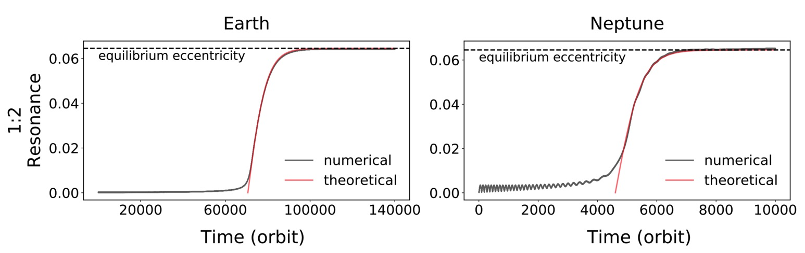

Eccentricity of resonant planetesimals
Long-term Hydrodynamic Simulations on the Planetesimals Trapped in the First-order Mean Motion Resonances, Hsieh, H.-F., Jiang, I.-G. 2019, ApJ, 877, 34
The aerodynamic drag, originated from the velocity difference between the dust grains and their surronding gas, drives them to drift towards the local pressure maxima in protoplanetary discs.
Despite that the drag-driven migration is most pronounced for millimeter- to centimeter-sized dust particles, the drag force is still able to drive kilometer-sized planetesimals to migrate inwardly. If there is a planet located in the inner disc, the resonant perturbation from the planet could capture planetesimals into mean-motion resonances and induce small equilibrium planetesimal’s eccentricity (Weidenschilling & Davis 1985, WD85).
However, the formula outlined in WD85 underestimates the equilibrium eccentricity \(e\), especially for planetesimals in the 1:2 resonance. In this paper, we improved the formula by including the contribution from the higher-order \(e^3\) term, which becomes comparable to the leading term as \(e \ge 0.05\). We performed N-body simulations using the REBOUND code, and find that the resulting equilibrium eccentricity is in better agreement with the improved formula. In addition, we derived the formula that describes the eccentricity growth of planetesimals in resonances, which is consistent with simulation results for low-mass planets.

The formulae in WD85 are based on the assumption of axisymmetric discs. To study the effects of planet-induced asymmetric substructures (e.g., spiral arms), I implemented the drag law into FARGO3D in which the drag force is applied in the N-body solver. In this paper, we found that the evolved disc would reduce the equilibrium eccentricity because of the flatter density profile near the resonance locations. The reduced eccentricity may decrease the collision rate between resonant and non-resonant objects, and hence reduce the amount of fragments in the feeding zone of inner planet.